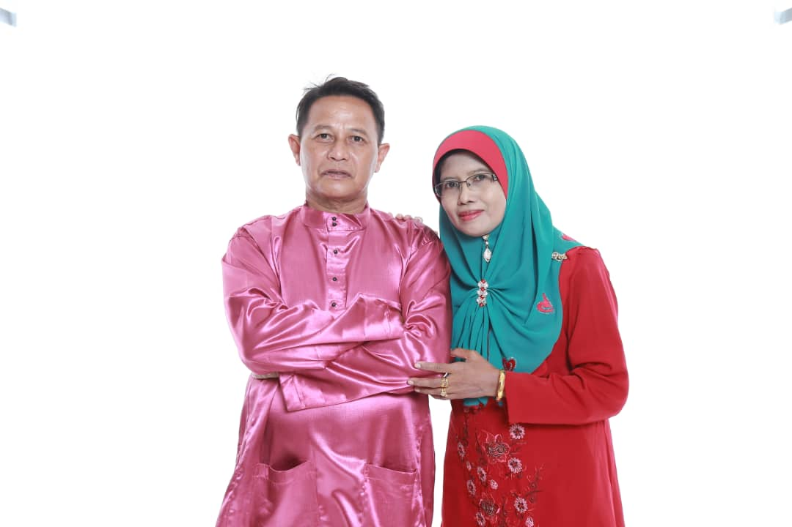

MY FAMILY
Family is the closest and most loved people. To my mind, family plays the most important role in the life of every person. Since birth, we are surrounded by the most beloved people. mom and dad; they teach us everything. In addition, siblings are also an important part of family members.

Let me share my family. I am Nurul Najihah is the third child in four siblings. I have two sisters and a younger brother. My eldest sister is Nurul Nur Ain, aged 24 years old who is working as a receptionist in a hotel. Meanwhile, my second sister, Nurul Najwa is working as assistant logistic at factory in Bukit Mertajam, Penang. My younger brother is currently in the army training for six months in Port Dickson, Negeri Sembilan.
 Next, without these two peoples, I do not exist on this earth,
there are my father and my mother.
My father was same age with mother, 54 years old.
My father name is Roslan bin Md Saad. He was born on Hospital Taiping in 1965.
My father was the big brother in their siblings. He was responsibility the old brother and father.
Yes! He was serious father during I was childhood, but now he likes joking. My father was worked as a driver lorry.
He has been working for a long time. No words can describe their sacrifice for me and other siblings.
My family and I live in Bukit Mertajam, Penang.
But, last year in month of Ramadhan, our family have move to Kulim, Kedah. I love my family so much.
I can not imagine a single day of my life without them.
May my family continue to be a happy family and always blessed by Allah.
Beside than that, I grew up with my kindly and most lovely mother.
My mother named Nor Aziah binti Ab Hamid was a full-time housewife.
She also born on 1965 in Hospital Bukit Mertajam, Penang.
My mother in siblings was three and she is the number of two out of three. She has sister and younger brother.
Her sister and younger brother was married and endowed the children.
My mother is a person who never knows the meaning of tiredness. She was a fully housewife.
She was carrying responsibility as a wife and mother was very good.
2020964045
Bachelor in Office Systems Management (Hons)
Faculty of Business Management
UiTM Machang, Kelantan
Malaysia